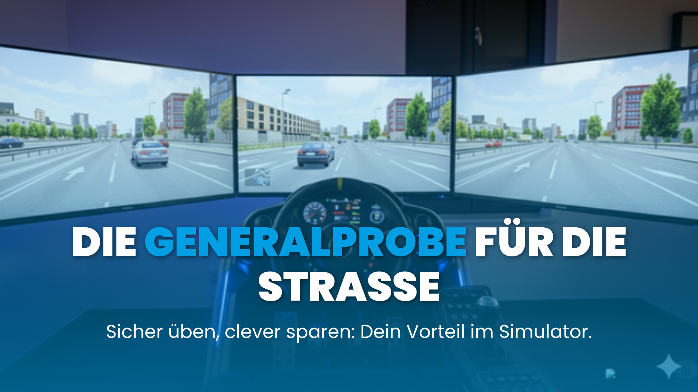
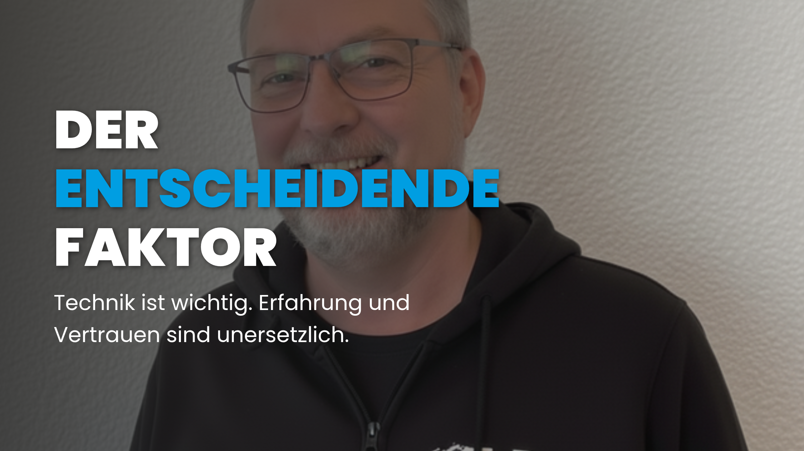

Weniger Fahrstunden, mehr im Portemonnaie: Wie unser System dir bares Geld spart
Die größte Sorge bei der Planung des Führerscheins? Fast immer sind es die Kosten. Es ist eine der ersten großen Investitionen im Leben eines jungen Erwachsenen und oft ein erheblicher Posten im Familienbudget. Man hört Horrorgeschichten von explodierenden Rechnungen, von Freunden, die plötzlich 30, 40 oder sogar mehr Fahrstunden benötigten. Viele Eltern und Fahranfänger fragen sich zu Recht: Wie kann man die Kosten beim Führerschein im Griff behalten, ohne an der Qualität und vor allem der Sicherheit der Ausbildung zu sparen? Die Antwort ist einfacher und gleichzeitig tiefgreifender als gedacht: Es geht nicht darum, die billigste Fahrstunde zu finden, sondern die wenigsten zu benötigen.
Die Psychologie der Kostenangst: Warum Transparenz der beste Berater ist
Die Angst vor den Führerscheinkosten kommt nicht von ungefähr. Sie wird durch einen Mangel an Transparenz in der Branche befeuert. Wenn man nicht weiß, was auf einen zukommt, malt man sich oft das schlimmste Szenario aus. Diese Unsicherheit ist ein enormer Stressfaktor. Ein klarer, strukturierter Plan, der von Anfang an kommuniziert wird, wirkt hier wie ein starkes Beruhigungsmittel. Er nimmt die Angst vor dem Unbekannten und ersetzt sie durch das sichere Gefühl, die Kontrolle zu haben. Eine Fahrschule, die ihre Prozesse offenlegt und Werkzeuge zur Effizienzsteigerung anbietet, zeigt, dass sie ein Partner auf Augenhöhe ist – und kein Verkäufer, der auf möglichst viele Stunden aus ist.
Unser 3-Säulen-System für maximale Effizienz
Um die teure Zeit auf der Straße zu minimieren und den Lernerfolg zu maximieren, haben wir ein System aus drei leistungsstarken Werkzeugen entwickelt, die Hand in Hand arbeiten. Sie sind feste Bestandteile unseres bewährten 5-Meilenstein-Prozesses und der Grund, warum unsere Schüler oft deutlich weniger Stunden benötigen.
Säule 1: Der "Fahrstundensparer" – Sicher üben, clever sparen
Stell dir vor, du könntest das Anfahren am Berg an der steilsten Straße Dortmunds, das seitliche Einparken am Phönixsee oder das Einfädeln auf die B1 so lange üben, bis es perfekt sitzt – ganz ohne den Druck des nachfolgenden Verkehrs, ohne Hupkonzerte und ohne dass der Zähler für die Fahrstunde tickt. Genau das ermöglicht unser hochmoderner Fahrsimulator. Er ist kein Videospiel, sondern ein professionelles Trainingsgerät, das dich reale Verkehrssituationen in einer absolut sicheren und fehlerverzeihenden Umgebung erleben lässt. Du baust hier das entscheidende Muskelgedächtnis für die Fahrzeugbedienung auf und gewinnst eine Routine, die dir im echten Verkehr eine immense Sicherheit gibt.
"Ich dachte, der Simulator sei nur Spielerei, aber er hat mir locker 5 teure Fahrstunden auf der Straße erspart."
Säule 2: Praxisnahe Theorie – Wissen, das sich auszahlt
Unser Theorieunterricht ist mehr als nur das Auswendiglernen von Regeln für die Prüfung. Wir nennen es das "Bedienungsanleitung"-Konzept: Wir vermitteln dir das "Warum" hinter den Verkehrsregeln so praxisnah, dass du es im Auto direkt anwenden kannst. Anstatt nur "Rechts vor Links" zu pauken, analysieren wir gemeinsam typische, knifflige Kreuzungen hier in Dortmund und besprechen, worauf man achten muss. Wenn du komplexe Vorfahrtsregeln nicht nur kennst, sondern im Kopf bereits verinnerlicht und auf reale Situationen übertragen hast, reagierst du auf der Straße schneller, vorausschauender und sicherer. Dieses tiefe Verständnis beschleunigt deine Lernkurve im Auto enorm und macht dich zu einem besseren Fahrer – und das spart am Ende wieder wertvolle und teure Fahrstunden.
Säule 3: Der Mensch – Der entscheidende Faktor
Technologie und ein guter Plan sind mächtige Werkzeuge. Aber die beste Ausstattung nützt nichts ohne den richtigen Handwerker. Die dritte und vielleicht wichtigste Säule unseres Systems ist der erfahrene Fahrlehrer. Er ist kein bloßer Beifahrer, sondern dein persönlicher Coach. Er analysiert deine Fortschritte im Simulator, versteht deine individuellen Unsicherheiten und passt den praktischen Unterricht exakt darauf an. Ein guter Lehrer erkennt, wann du bereit für den nächsten Schritt bist, wo deine Unsicherheiten liegen und wie er dich gezielt fördern kann. Er sorgt dafür, dass die gewonnene Effizienz auch wirklich in weniger Fahrstunden resultiert und du nicht nur die Prüfung bestehst, sondern ein Leben lang sicher fährst.
Die Anatomie einer (in)effizienten Fahrstunde: Ein Vergleich
Um den Unterschied greifbar zu machen, vergleichen wir zwei typische Szenarien für eine 45-minütige Fahrstunde zum Thema "Parken":
- Szenario A (Ineffizient): Die ersten 10 Minuten gehen für die Suche nach einer geeigneten, ruhigen Straße zum Üben drauf. In den nächsten 20 Minuten werden die Grundlagen des Einparkens am realen Objekt erklärt, was zu Unsicherheit, Korrekturen und Stress führt. Die verbleibende Zeit reicht für 3-4 Parkversuche, von denen vielleicht einer gut klappt. Ergebnis: wenig Wiederholung, hoher Stress, langsame Lernkurve.
- Szenario B (Effizient mit G+H): Der Schüler hat das Parken bereits 20 Mal im Simulator geübt und kennt die Abläufe im Schlaf. Der Fahrlehrer fährt direkt eine bekannte Übungsstrecke an (5 Minuten). Die restlichen 40 Minuten werden genutzt, um das Gelernte unter realen Bedingungen zu perfektionieren. Ergebnis: 10-12 erfolgreiche Parkversuche, Aufbau von Selbstvertrauen, steile Lernkurve.
Wie viel könntest DU sparen?
Verschiebe den Regler, um die Anzahl der Fahrstunden (Übungsfahrten) zu schätzen, die du bei einer herkömmlichen Fahrschule benötigen würdest.
Kosten (Standard)
1800 €
Kosten (mit G+H System)
1500 €
Beeindruckend, oder? Der Rechner zeigt schwarz auf weiß, wie sich unser System auf deinen Geldbeutel auswirken kann. Aber echtes Sparen geht über reine Zahlen hinaus – es beginnt im Kopf. Denn jede Fahrstunde, die du nicht brauchst, ist das Ergebnis von solidem Wissen und dem Selbstvertrauen, das daraus entsteht. Bevor du also wieder an Kosten denkst, teste doch mal die Grundlage für deine zukünftige Ersparnis: dein Wissen. Wie fit bist du wirklich für die Straße?
Teste dein Wissen!
Bist du fit für die Straße? Finde es mit unserem kleinen Quiz heraus!
Quiz Auswertung
Fazit: Klug investieren statt draufzahlen
Die durchschnittlichen Kosten für einen Führerschein sind eine erhebliche finanzielle Belastung. Doch Sie haben die Kontrolle. Die Entscheidung für eine Fahrschule, die in moderne Technologie, effiziente Lehrmethoden und exzellente menschliche Betreuung investiert, ist nicht nur eine Entscheidung für eine bessere Ausbildung, sondern auch die klügste für Ihr Budget. Statt am falschen Ende zu sparen und einen niedrigen Stundenpreis mit vielen ineffizienten Stunden zu bezahlen, investieren Sie in ein System, das Ihnen hilft, die Gesamtkosten aktiv zu senken und Ihr Kind optimal auf eine sichere Zukunft im Straßenverkehr vorzubereiten.
Noch Fragen zu den Kosten?
Ist der Simulator wirklich kostenlos?
Ja, der Einsatz des Fahrsimulators zur Vorbereitung ist in unseren Ausbildungspaketen enthalten und verursacht keine zusätzlichen Kosten. Wir sehen ihn als Investition in deine Effizienz.
Was ist, wenn ich doch mehr Stunden brauche?
Unser System zielt darauf ab, die Stundenzahl zu reduzieren, aber die Ausbildung ist immer individuell. Solltest du mehr Zeit benötigen, planen wir das transparent mit dir. Unser Ziel ist immer deine Sicherheit, nicht eine bestimmte Stundenzahl.
Sind die Sonderfahrten in der Ersparnis schon mitgerechnet?
Nein. Die gesetzlich vorgeschriebenen 12 Sonderfahrten (Autobahn, Überland, Nachtfahrt) sind fix und müssen von jedem absolviert werden. Unsere Ersparnis bezieht sich rein auf die variablen Übungsfahrten, wo die größten Kostenunterschiede entstehen.
Fühlen Sie sich bereit, den cleveren Weg zum Führerschein zu gehen? Holen Sie sich als ersten Schritt unsere kostenlose Anti-Chaos-Checkliste, um bei der Wahl Ihrer Fahrschule die richtigen Fragen zu stellen und Kostenfallen von vornherein zu vermeiden.
Welche Erfahrungen habt ihr mit den Kosten beim Führerschein gemacht? Teilt eure Tipps zum Sparen in den Kommentaren!